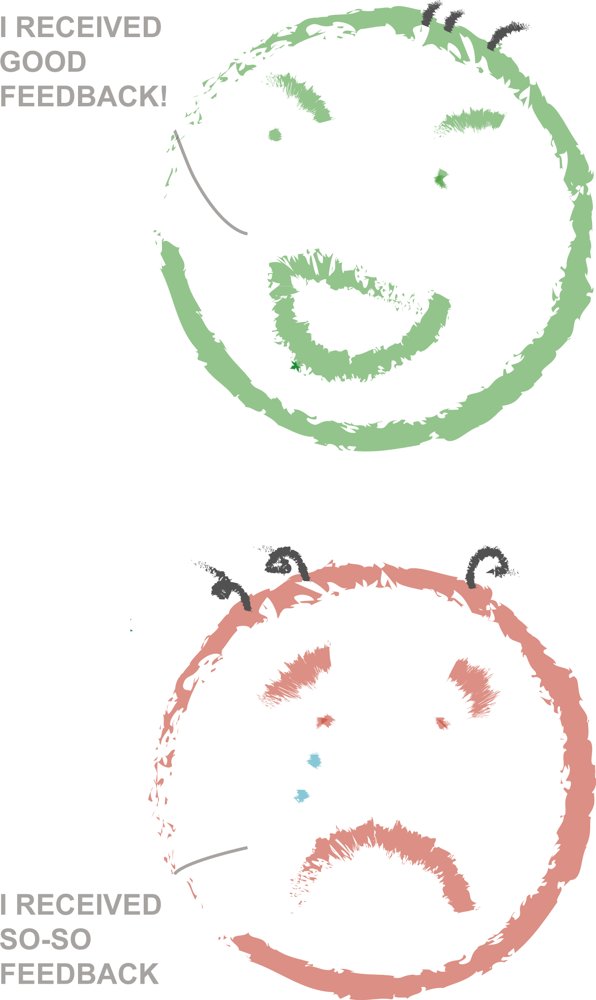

Pair programming is a DBC thing. We team up with one other student to work on a problem together. While one of us giving direction and act like a brain, the other will perform coding like body and hands. DBC calls that a navigator and a driver. In the past I have done projects in a team setting where everyone works on a separate task. However the idea of pair programming is new to me.
The Pairing
In the beginning of pairing, it’s always strange. Once you get to know the person a little bit more, pair programming is a lot easier. It’s like having a study group while I was in university. Everyone tends to think differently on solving problems. The good part is the pairing gets more fun and I get to see different ways of solving the same problem. It’s helpful. The bad side is sometimes we are at different paces. One of us goes faster and have to stop to wait. It’s not time-efficient.
Feedback System
After each pairing session we give feedback to our partner. When I read my feedback, I feel embarrassed. There are a lot of nice talking before getting on the real issue. I learned a couple things I didn’t know about myself. Also it’s hard to write feedback. I have to think about good things to say. A one-hour pairing session does not give us enough time to know about each other. There is a chance that my partner may not agree with what I wrote down. Keep in mind that the feedback is for reference only. At the end, I think pairing is a good way to learn if we have plenty of time studying. However, the feedback is not as useful as it sounds.
